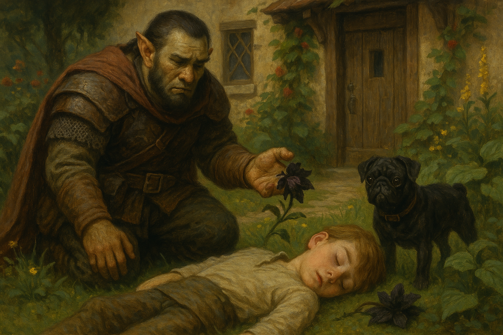

Chapter 1: Offer from the Wind Family
Dark Petals

Dark Petals
15048.11.16
「嘿！你有沒有在聽我說話？」
Brown 一回神，一個壯碩男子正貼在他的眼前對他嘶吼。酒館的老闆 Thomas 搖了搖頭。看著 Brown 一身冒險者的裝扮，又不是當地人，Thomas 便告訴了他，當地的小貴族 Wind 家族最近計畫要穿越森林，但是因為森林比較危險，希望能聘人當作護衛，帶他們穿過。
Brown 想了想，這似乎是個讓他可以賺點零頭的好方法，因此他便向 Thomas 問清了該如何找到 Wind 家。外頭天色已晚，Brown 向 Thomas 詢問酒館是否有空房，但唯一剩下的位子，是一個已經住了一個人的雙人房。
Thomas 好心帶著 Brown 前往那間房間，敲了敲門。一個看來不太友善的半身人探了出頭來。在 Brown 解釋後，半身人因為不太喜歡半獸人，拒絕了 Brown 的入住。Thomas 建議 Brown 可以直接去找 Wind 的家，也許他們願意提供他夜宿的機會。
在路上，Brown 意外發現了一間破舊的空屋，他想著既然沒有人住在裡面，在這裡度過一個晚上，好像也不是不行，於是他便走了進去，找到了臥房，放下行李後，便倒在床上睡去。
午夜，Brown 聽見了其他房間傳來的腳步聲，便機警的躲到了床旁的衣櫃裡。從衣櫃的縫隙，Brown 看見入侵者的身影，正拿著匕首朝他原本躺的床上猛刺。驚訝的他，不小心將手上拿著的背包掉到地上，引起了那人的注意。兩人在黑暗中纏鬥，最終，Brown 終於將他擊暈，並用他的繩子把那人牢牢綁在房子的門口。仔細一看，這個入侵者雖然有著人的體型，身上卻有著十分濃密的毛髮，多到甚至不太像人。但 Brown 無法分辨他是什麼生物。在他暈倒的前一刻，Brown 聽見他的腦海中，一個低沉的聲音，對他說著「Kill Wind」。
15048.11.17
醒來後，Brown 發現綁在門口的入侵者經然消失了，繩子也沒有被破壞的痕跡。雖然滿頭問號，Brown 也只能摸摸鼻子了。
走向 Wind 家，Brown 敲了敲門，一個女子打開了門。他自稱是 Wind 女士，並帶著說明來意的 Brown 進了房子，拜訪被稱為 Lord Wind 的 Wind 先生。兩人也向 Brown 介紹了他們年幼的孩子，Peter，與他的巴哥犬 Mr. Muffins。Brown 和 Wind 夫婦表示願意接受這項任務，而 Wind 大人則承諾在安全護送他們過森林後，會付給他 50 金的報酬。
在夫婦開始準備行李時，Brown 找了 Peter，藉機認識一下這個家庭以及這個村子。Peter 表示村子裡的人對他們似乎不是很親近，對他們好感覺也都是想賺他們的錢。Mr. Muffins 是他唯一的朋友，也是他們在搬到這座村子後，他的爸爸才帶回來給他的。Peter 也表示他聽說爸爸要帶他們到森林另一端的一座城市，叫做魏斯科。他並不清楚為什麼要去那裡，不過從言談中，Brown 得知他們家似乎信仰了一個叫拉索斯的宗教，而 Lord Wind 不是拉索斯的神職人員，就是為拉索斯做生意。
在 Peter 跑回家的路上，Mr. Muffins 看著 Brown，而 Brown 腦中冒出了昨晚聽見的那聲音，說著「Kill Wind」。
兩人一狗回到了 Wind 家，在門口的花園輕鬆地逛著。Brown 發現了角落有個看起來十分奇異的黑色花朵，偷偷摘了一朵下來。湊近鼻子聞，有股難言的臭味，花瓣上似乎還流有奇怪的黏液。出於好奇，Brown 將這花朵遞給 Peter，向他詢問是否知道這是什麼花。Peter 拿起花朵湊近著聞，卻突然暈眩而倒地。Mr. Muffins 大聲的吠叫，引起了 Wind 夫婦的注意。兩人從房內衝了出來，看見暈厥的 Peter，以及他身邊的那朵花。Lord Wind 大聲喝斥著，把 Brown 訓了一頓，並解除了和他的契約。夫婦趕緊將 Peter 抱回房子去，並試著找醫生。
眼看這裡已經不是他能待的地方，Brown 將那朵花撿起，往 Wind 家外頭走去。回頭，他看見 Mr. Muffins 也跟了上來。一人一狗決定如原本的計畫，穿越森林，朝著名為魏斯科的城市前進。